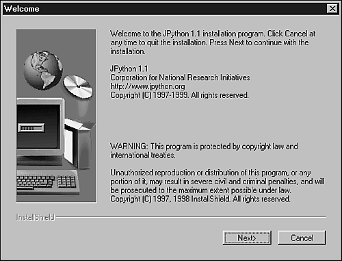

| < BACK | Make Note | Bookmark | CONTINUE > |
Downloading and Installing JPython
Next, you find the required steps that you need to perform in order to download and install JPython. Visit the following address, and download the latest version.
http://www.jpython.org/download.html
You have two choices for downloading JPython. You can either download the JPython version that contains the OROMatcher regular expression library, or the other version that doesn't contain it. Note that it's required that you decide between the two versions. Only if you decide to use the version that comes with the OROMatcher, will you have access to the re module. However, you will have to agree with a different kind of licensing.
Before spending time downloading the file, verify whether you have a working Java 1.1 or 1.2 compatible JVM installed. In case you don't have one, you will need to locate one on the Internet and install the right JVM for your system.
JPython is distributed as a self-extracting .class file created by InstallShield - Java Edition. To install JPython, you need to open the command line to the directory in which you have placed the JPython11.class file. Note that if you have downloaded the JPythonONLY11.class file, you must first rename it to JPython11.class.
ren JPythonONLY11.class JPython11.class
Then, type the following command to start the installation process.
<java interpreter> JPython11
Depending on your system, you have to type one of the following options. Note that you don't have to include the .class on the end of the filename.
java JPython11 jre JPython11 jview JPython11
In case you don't have a GUI, you need to add the following argument to the previous command: -o dir_to_install_to. JPython will install to the specified directory without activating the graphical installer.
After initiating the installation process, you will be prompted to accept the terms of the license (see Figure 18.1). Read it and say yes to continue with the process.
Figure 18.1. When you accept the terms of the license, JPython is installed on your system.
Remember to check the Installation Notes after completing the installation.
Now, you should be able to run JPython by typing the following command:
jpython
If you are using a Windows system, you can have access to JPython by double-clicking on its icon.
Downloading the CPython Library
As of now, JPython comes with support for only a small set of the standard Python modules. For those who will concentrate on development using Java packages, the modules provided by JPython should be fine, but note that CPython has a wide variety of useful modules.
If you already have CPython 1.5.1, 1.5.2, or a later version installed on your computer, you can use its library. If you don't have CPython installed, you can get its libraries from the JPython Web site. For example, the libraries for version 1.5.2 are stored in the following file:
http://www.jpython.org/pylib152e.jar
To install the standard Python libraries, use the following command:
jpython -jar pylib152e.jar
Besides the regular distribution download page, the latest snapshots of the JPython source code are always available via CVS too.
Licensing
Starting with version 1.1 beta 1, JPython has two separate distributions. This is because JPython uses a third-party library for handling regular expressions—the standard re module is implemented using OROMatcher, which is a regular expression library by ORO, Inc.
Because OROMatcher has a different kind of license, the JPython distribution that uses it requires a specific license as well because OROMatcher is not completely free software. (It doesn't allow you to have access to its source code.)
Currently, at the ORO Web site, you can find a note saying that the company plans to open source their software, releasing it under the Apache license, so the restrictions on using OROMatcher might be lifted. You should keep an eye on that.
However, JPython provides another distribution that comes without the library, which makes the regular expression capability not available. This distribution is a completely open source version of JPython. Note that if later you decide to use OROMatcher, you can accept its licensing agreement, and integrate it with the free distribution of JPython that you already have. Check out the OROMatcher site at
JVMs That Support JPython
As of now, JPython should run successfully on any bug-free fully 1.1 or 1.2 compliant Java Virtual Machine (JVM). Next, you have a list of Operating System specific JVMs. Even if your platform is not listed here, it doesn't mean that it doesn't have a JVM.
Linux
JDK 1.1.x and 1.2.x from blackdown.org—It is suggested that you use either the 1.1.7 JVM or 1.2 JVM.
http://www.blackdown.org/java-linux.html
IBM Developer Kit and Runtime Environment for Linux—This is IBM's new JVM for Linux.
http://www.ibm.com/java/jdk/118/linux/index.html
Sun's J2SE (1.2.2 JVM) for Linux—This is Sun's JVM ported to Linux. You need a free login to access the Sun Developer Connection.
http://developer.java.sun.com/
Win32 (Windows NT, 95, and 98)
JView from Microsoft—This JVM is installed when you install Microsoft Internet Explorer 4.0 or 5.0. Currently, this is the fastest JVM on which to run JPython.
http://www.microsoft.com/java/
Sun's JVM for Windows—Sun provides 1.2 (Java 2) and 1.1 Virtual Machines for the Windows platform. This is certainly the most compatible VM with the official Java specification.
http://www.javasoft.com/products/
Solaris
Although Solaris 2.6 comes with JDK 1.1.3, Solaris users will probably want to upgrade to either the JRE 1.1.7 or JRE 1.2.1 at least.
JRE 1.1.7 from Sun
http://www.javasoft.com/products/jdk/1.1/jre/index.html
JRE 1.2.1 from Sun
Irix
Here, you can get version 3.1 of the Java Development Environment from SGI, which is based on the 1.1.3 JVM.
http://www.sgi.com/developers/devtools/languages/java.html
Macintosh
Mizutori Tetsuya has made available an application called JPython Runner to make it easier to use JPython on Macintoshes.
http://www.bekkoame.ne.jp/~mizutori/java/index.html#jpythonrunner
See also the document "How to Run JPython on Macintosh."
http://www.bekkoame.ne.jp/~mizutori/java/index.html#howtojpython
| Last updated on 1/30/2002 Python Developer's Handbook, © 2002 Sams Publishing |
| < BACK | Make Note | Bookmark | CONTINUE > |